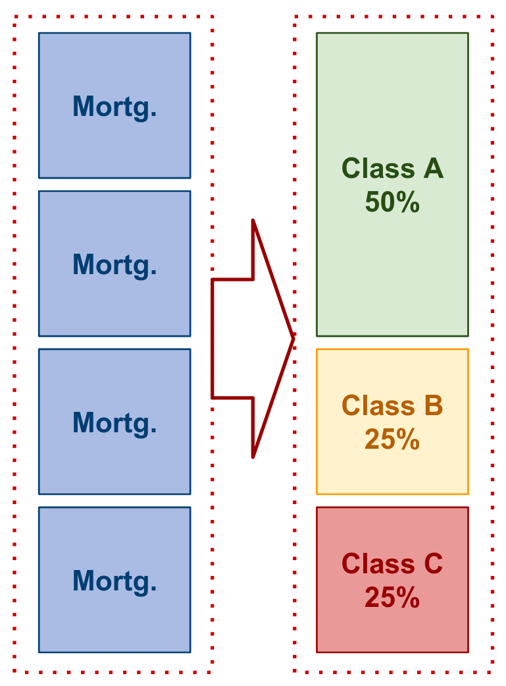
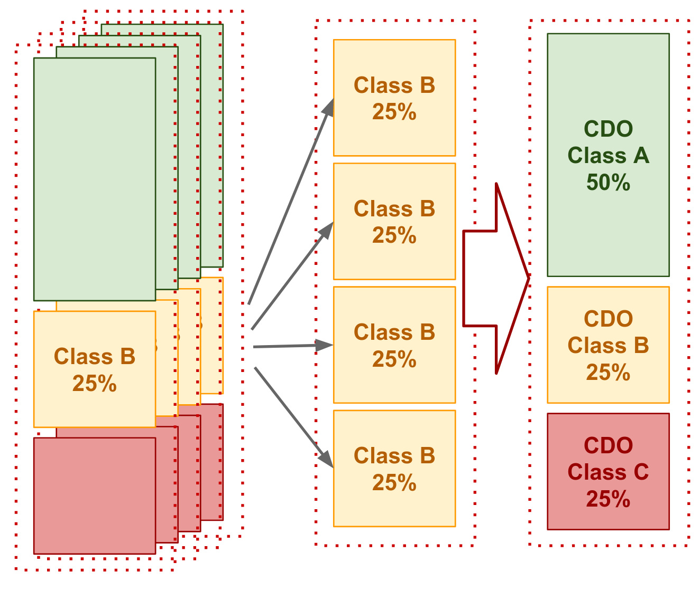

RE01
Lecture 11: Public Real Estate Debt 2
Dr. Thies Lindenthal
htl24@cam.ac.uk
February 2023
CMO
Structuring mortgages into CMO (CDO example later)
- Assume population of mortgages
- All have default risk of 0.15
- In the event of default, recovery rate is zero
- Form portfolios of four randomly selected mortgages
- Tranche each mortgage pool into an A bond (50%), B bond (25%) and C bond (25%) with default risks going from C to B to A
- Form CDOs with the B bonds later
- What is the default risk in each tranche?

create CDO from CMO tranches
Take B-bonds randomly from four CMOs to create CDO
- Continue to assume the default risks are independent
- We will tranche the CDO 50-25-25 as before
- What are the default probabilities in each tranche?
- Calculation same as previous: but P(def) is now 0.1095 …
